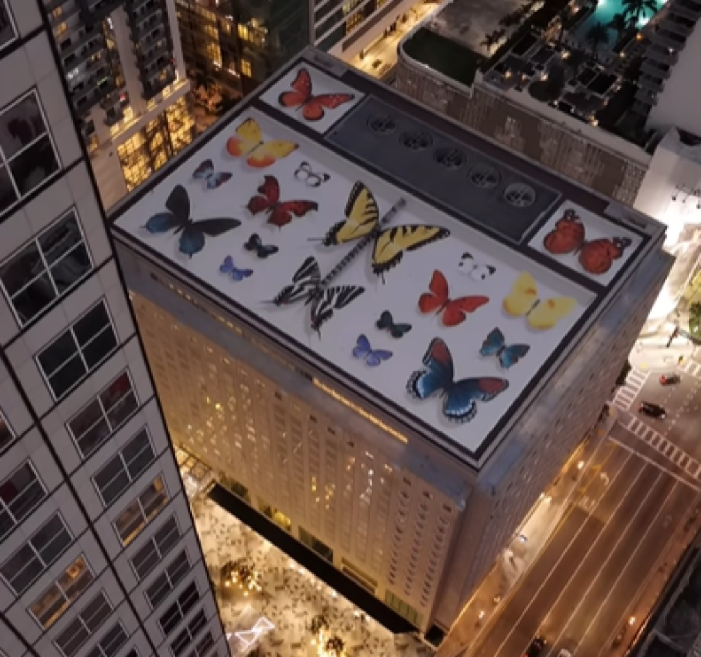
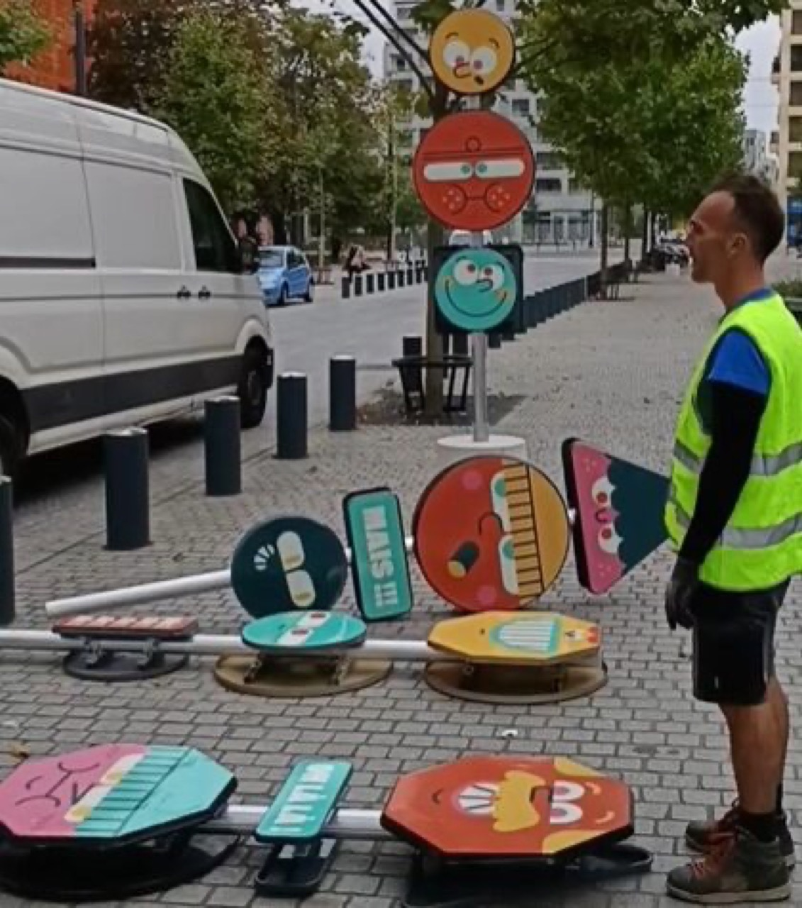

The concept of imaginatively dressing different pet breeds according to their distinctive species characteristics, behavioral patterns, and psychological archetypes has unexpectedly become significant phenomenon within social media platforms and popular culture discourse, creating surprising blend of humor, comparative animal psychology, and genuinely sophisticated fashion commentary. What initially began as lighthearted Instagram content has gradually evolved into more substantial explorations of how specific animal temperaments, structural body characteristics, and recognizable behavioral patterns align remarkably well with particular clothing styles, fashion aesthetics, and broader fashion narratives.
The artistic exploration typically involves sophisticated digital illustration, animation, photography, or mixed media techniques showcasing various dog and cat breeds styled elaborately according to breed-specific personality archetypes and behavioral characteristics. A Chihuahua might appear stylized in haute couture evening wear reflecting their characteristically delicate, theatrical, and dramatic nature. A Golden Retriever could be depicted wearing comfortable, approachable sportswear embodying their characteristically friendly, outgoing, and people-oriented disposition. Cats, nearly universally recognized across cultures as aloof, independent, and mysteriously self-sufficient, frequently appear depicted in minimalist, sophisticated high-fashion ensembles suggesting their self-assured attitudes and deliberate behavioral autonomy.

This creative practice draws meaningfully from behavioral zoology, contemporary fashion theory, and established comic traditions of anthropomorphic representation. Artists seriously researching this content must develop sophisticated understanding of breed-specific behavioral traits, physical characteristics, and psychological tendencies. Border Collies' renowned intelligence and intense work orientation translate logically into professional business casual styling. Bulldogs' characteristically stocky builds and gentle temperament suggest oversized, comfortable contemporary streetwear. The interpretive exercise becomes genuinely engaging methodology for simultaneously discussing both animal characteristics and human fashion assumptions, systematically questioning why specific clothing styles and aesthetic frameworks become culturally coded as appropriate for particular personality types.
Culturally speaking, this trend reflects contemporary society's increasingly complex and emotionally significant relationship with domestic pets. No longer functioning merely as animal companions or property, pets have evolved into family members, independent style icons, and authentic social media personalities with independent audiences and recognition. The practice of imaginatively visualizing how various pets might dress themselves if granted human agency and access to fashion represents our widespread tendency to anthropomorphize animals while simultaneously celebrating their genuinely unique and irreplaceable characteristics. Social media platforms have amplified this phenomenon exponentially, with dedicated hashtags focused on creative pet fashion inspiration consistently generating millions of engagement metrics and sustained audience interaction.

From fashion and design perspective, the exercise illuminates fundamental principles regarding how clothing communicates personality, status, aspirations, and group belonging. A specific breed characterized culturally as "working class" or "practical" receiving durable, unpretentious fashion demonstrates how clothing encodes social hierarchies and unstated assumptions regarding worth and value. The creative challenge genuinely lies in translating nonverbal animal characteristics into clear visual fashion language that humans immediately understand intuitively and find entertaining or aesthetically satisfying.
The underlying psychology governing this trend connects directly to established human tendency toward projecting human qualities, emotions, and intentions onto animals—a phenomenon extensively explored within behavioral science, evolutionary psychology, and cognitive science. By imaginatively exploring how pets might dress themselves or how specific fashion styles match their apparent personalities, we're essentially exploring hidden aspects of our own personalities, preferences, and unacknowledged aspirations. An individual who persistently imagines their cat inhabiting cutting-edge designer fashion might actually be revealing their own suppressed aspirations toward more sophisticated style, while someone consistently dressing their dog in casual athletic wear may reflect their own comfort within working-class aesthetic frameworks.